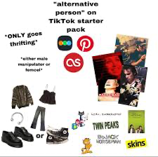
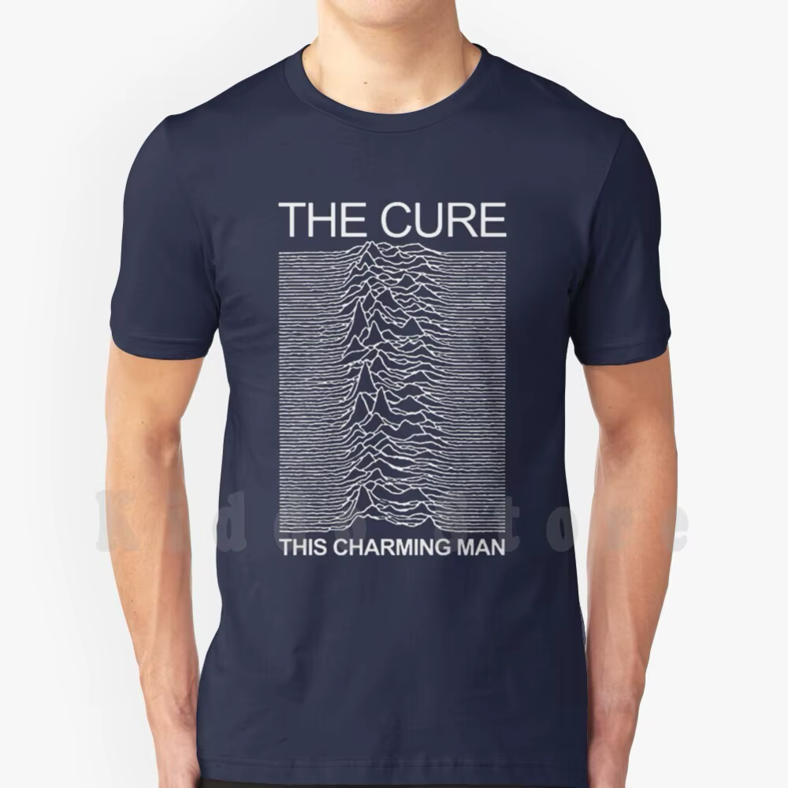
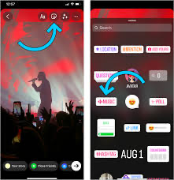
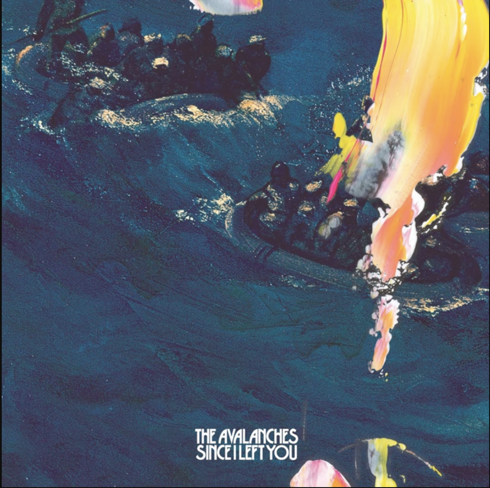
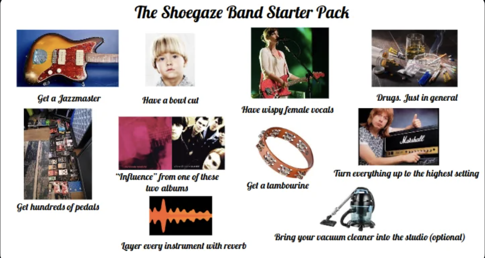

Mission Statement: 1. Release at least 4 albums through this project 2. Develop a cult (or cult to mainstream) following across alternative music communities 3. Become recognized as an established artist and producer within professional audio circles
Success Metrics: 1. At least one of my songs shows up in a Tik Tok meme 2. I can walk into my local mall and find at least a couple of indie kids wearing my shirt 3. My YouTube feed starts getting spammed with tutorials on how to get my 'sound' 4. I get invited to perform at a small festival or radio show in California
Fan Base: 1. Indie or alternative types (most likely 16 to 28 year-olds) 2. Probably already listen to Deftones, shoegaze, or gothic post-punk/darkwave 3. A majority of them might be Hispanic or Spanish-speaking and grew up on some 80's/90's Latin rock 4. Some of them definitely wear Doc Martens or like shopping at thrift stores. 5. Probably enjoy cult horror films, surrealist anime, or really like A24.
Content and Strategies (1/3): ghouligan is an independent singer/songwriter who blends goth, metal, Latin, and electronic influences across his work. While his musical propositions may have been achieved before, ghouligan's artistic approach primarily centers around achieving soundscapes by repurposing sounds or genre ideas. The official ghouligan logo was previously shown in the website's main page but has been removed until he has established the copyright. The logo itself was inspired by an image from the Nazca lines that resembles a waving humanoid figure, part of the idea was to not only adopt an official and easily-recognizable logo, but have an image that could be easy to market as a t-shirt. A perfect example of this is the famous Joy Division shirts featuring their first album's cover, these t-shirts were highily popular due to the album cover's design alone yet it did a lot to promote the band decades after their separation.
Content and Strategies (2/3): I could stock up on 20 or so T-shirts but before actually selling merch, however, I will need to create the point of sales. While I could integrate a store into my site after some heavy computer work, having shows will be the most important factor for generating merch sales. This brings me to the topic of live shows, which I feel would be harder for me to achieve from the start. Having only lived in Bakersfield for about a year and a half now, there aren't many connections I feel I could leverage to quickly navigate the local music scene. What I do have to my advantage, however, is that I'm not only in consistent contact with music faculty through the commercial music program, but my current job at Guitar Center also allows me to frequently come across other local musicians. I've only worked about a month there and am getting to know my co-workers a bit more, I'm confident that I could make a venue connection within three to four months. At the same time, however, I wouldn't want to approach networking from a selfish standpoint; I wouldn't mind lending any production skills I have in service of other artists as well (this also touches upon one of my mission statement of becoming more known as a producer).
Content and Strategies (3/3): One thing that I strongly feel that I need to consider (which I believe was also covered during week 4), is the content that I will have readily available by the time I get to form venue connections and the like. I experienced something similar first-hand, after one of the commercial music professors introduced me via email to a music professor at UC Irvine. Not only was I able to share my work with him via my website, but I was also able to share a link to an article about a past internship with him. I held on to that article link for safe-keeping, and being able to share that makes the experience come off a lot more legitimate than if I were to simply say that I've done that thing. In this same vein, I'll need to have material ready for contacts of interest to check out when booking shows. While I have plenty of unfinished songs that need to be worked on, I'm strongly thinking that I could focus on two or three originals and seriously have some covers down as early repertoire. So in addition to publishing three songs on streaming services, I could record about five or four cover videos and post them across social media.
Marketing: My marketing strategy primarily revolves around social media but with a slightly-less conventinal approach. I definitely want to promote my performances and original work but I think that changing this apporach a bit could be very helpful in meeting at least two of my three goals. I have a handful of song ideas that I've produced over the years but never actually released because they contain samples. It was actually through the Pat Corcoran video that I got the idea about potentially releasing an uncleared album for free-to start generating an audience. Basically, I would finish a bunch of instrumental song ideas and release them for free (via YouTube/SoundCloud); this would literally be the culmination of years of semi-passive work I've been doing since high school and undergrad, and I wouldn't mind not making money from it since finishing these tracks should be quicker than writing my own songs. I get one of four albums down and put my production techniques out there, but of course I would also expect myself to finish my flagship songs and post live performances in tandem. This free album, however, will need an album cover for which I will need an Adobe Creative Cloud subscription.
Marketing Budget: 1. Adobe Creative Cloud Student Plan - $20/month ($60 for three months) 2. ghouligan Custom T-Shirt (merch) - $15/shirt ($300 for 20 shirts on CustomInk) 3. Total - $360 across three months
Competition: Although I haven't seen many current acts blending goth and metal influences with Latin rhythms, I do get a feeling that this could be a fairly-easy proposition that other starting artists could come by. I did find a band a few days ago called Doombia that blends cumbia rhythms with doom metal and post-punk, but after a few listens I came to the realization that their sound wasn't quite what I envision for me. A big reason for that is because I would be performing and writing songs as a solo act, and a lot of my original compositions are done with my DAW and guitar as opposed to jamming with others. Outside of Doombia, it doesn't seem like there's many Gen Z acts capitalizing on a Latin goth sound. What's been really popular within alternative Gen Z'ers during the last five years has been shoegaze, and there's already plenty of bands out there trying to sound like My Bloody Valentine or Slowdive. The post-punk and darkwave scenes have really been dominated by the likes of Molchat Doma and Twin Tribes, but their sounds are a lot more rooted in synthpop than what I usually incorporate.
1-Month Goals: 1. Get a guitar amp, mic stand, and mic cable 2. Finish one orignial song, upload to this website 3. Perform one cover live and upload to Instagram/YouTube/TikTok 4. Finish two instrumentals for the sample album 5. Discover and explore local venues
3-Month Goals: 1. Buy Adobe CC, work on the instrumental album's cover 2. Finish two more original songs, upload to this website 3. Perform three more covers, upload to Instagram/YouTube/TikTok 4. Perform one cover or original song at an local open mic 5. Talk to professors, peers, or co-workers until obtaining one production opportunity
9-Month Goals: 1. Obtain first concert gig, purchase 20 T-shirts for sale and potential give-away 2. Copyright official logo 3. Finish the free album, release across YouTube and SoundCloud 4. Finish one more original song, upload original EP to streaming services 5. Purchase Adobe CC and create album art in addition to promotional flyers, post promotional flyers on social media.